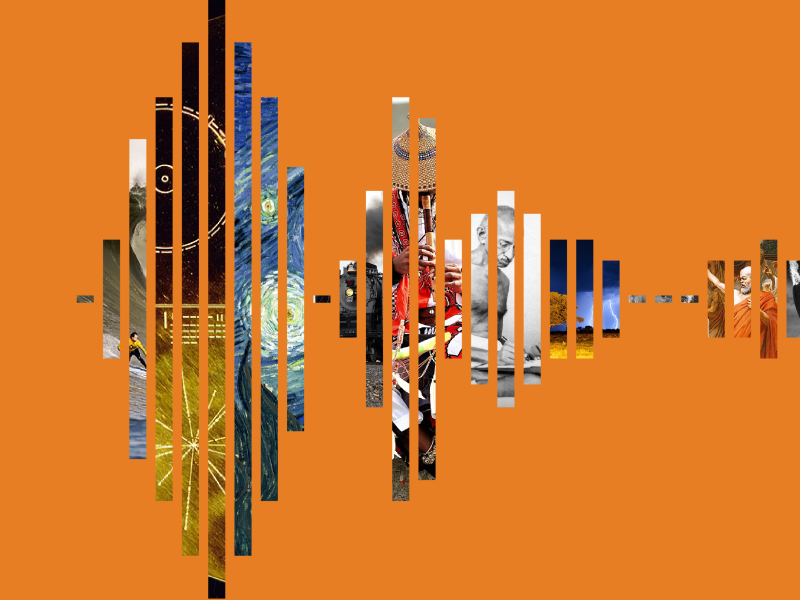
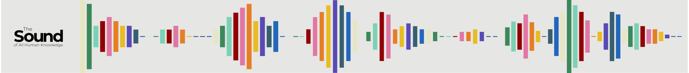
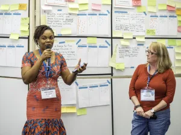

- Our Work
- Support Wikipedia
- Research
- Advocacy
- Technology
- News
- Participate
- About
-

Imagine a world in which every single human being can freely share in the sum of all knowledge.
The nonprofit Wikimedia Foundation provides the essential infrastructure for free knowledge. We host Wikipedia, the free online encyclopedia, created, edited, and verified by volunteers around the world, as well as many other vital community projects. All of which is made possible thanks to donations from individuals like you. We welcome anyone who shares our vision to join us in collecting and sharing knowledge that fully represents human diversity.
1
Wikimedia
projects belong to everyone
You made it. It is yours to use. For free. That means you can use it, adapt it, or share what you find on Wikimedia sites. Just do not write your own bio, or copy/paste it into your homework.
2
We respect your data and privacy
We do not sell your email address or any of your personal information to third parties. More information about our privacy practices are available at the Wikimedia Foundation privacy policy, donor privacy policy, and data retention guidelines.
3
People like you keep Wikipedia accurate
Readers verify the facts. Articles are collaboratively created and edited by a community of volunteers using reliable sources, so no single person or company owns a Wikipedia article. The Wikimedia Foundation does not write or edit, but you and everyone you know can help.
4
Not all wikis are Wikimedia
The word “wiki” refers to a website built using collaborative editing software. Projects with no past or existing affiliation with Wikipedia or the Wikimedia Foundation, such as Wikileaks and wikiHow, also use the term. Although these sites also use “wiki” in their name, they have nothing to do with Wikimedia.

Research
We conduct our own research and partner with researchers worldwide to address change in society and technology.
More about the research
Technology
From site reliability to machine learning, our open-source technology makes Wikipedia faster, more reliable, and more accessible worldwide.
More about the Technology
Advocacy
We conduct our own research and partner with researchers worldwide to address change in society and technology.
More about the TechnologyCollaborative projects are the core of the Wikimedia movement.
Our volunteers build tools, share photos, write articles, and are working to connect all the knowledge that exists.
See all projects
Wikipedia
Free encyclopedia written in 300 languages by volunteers around the world.
See all projectsWikimedia Commons
The world’s largest free-to-use-library of illustrations, photos, drawings, videos and music.
Visit Wikimedia CommonsNews — Actualités
See what we have been up to
-
A procura pelo Som de Todo o Conhecimento Humano tem início: Concurso global visa identificar o primeiro logotipo sonoro para projetos da Wikipedia e Wikimedia
This post is also available in: English, اَلْعَرَبِيَّةُ, Bahasa Indonesia, Deutsche, & 한국어. 13 de setembro de 2022 — Hoje, a Fundação Wikimedia, a organização sem fins lucrativos que apoia os projetos da Wikipédia e da Wikimedia, está lançando O Som de Todo o Conhecimento Humano, um concurso global para encontrar um logotipo sonoro para os projetos da Wikipédia e….
14 September 2022 Read more -
The search for The Sound of All Human Knowledge begins: Global contest aims to identify the first ever sound logo for Wikipedia and Wikimedia projects
This post is also available in: اَلْعَرَبِيَّةُ, 中文, Bahasa Indonesia, Deutsche, Português, & 한국어. 13 September 2022 — Today, the Wikimedia Foundation, the nonprofit that supports Wikipedia and Wikimedia projects, is launching The Sound of All Human Knowledge, a global contest to find a sound logo for Wikipedia and Wikimedia projects. Submissions are open from….
13 September 2022 Read more
Profiles
Wikimedians are heroes of free knowledge.
Help us unlock the world’s knowledge.
As a nonprofit, Wikipedia and our related free knowledge projects are powered primarily through donations.
Connect — Conecta
Stay up-to-date on our work.
-

Get email updates
This mailing list is powered by MailChimp. The Wikimedia Foundation will handle your personal information in accordance with this site’s privacy policy.
-
Contact a human
ContactFollow
 Twitter
Twitter
Photo credits
-

foundation-web-banner-1
- 
-
-